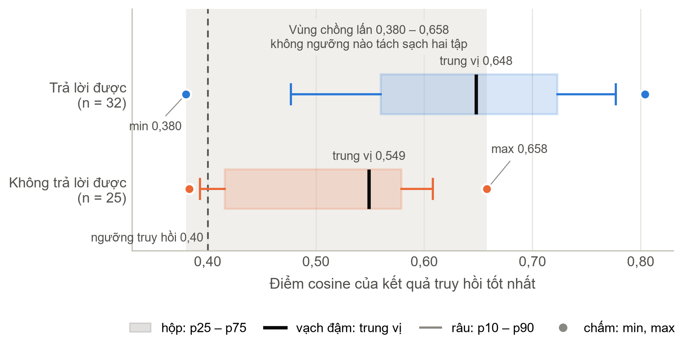
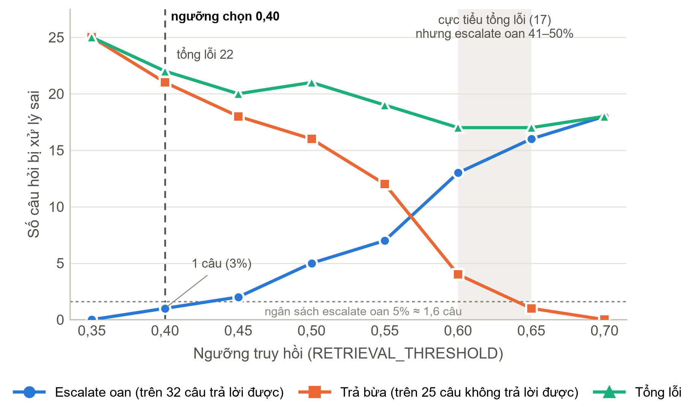
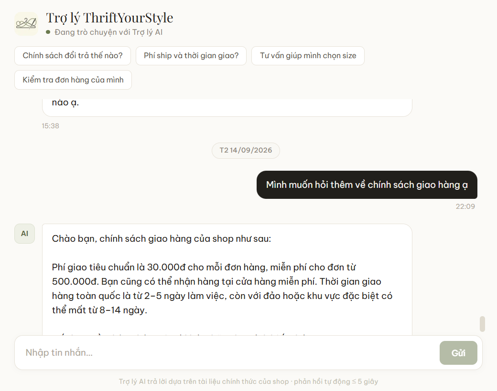
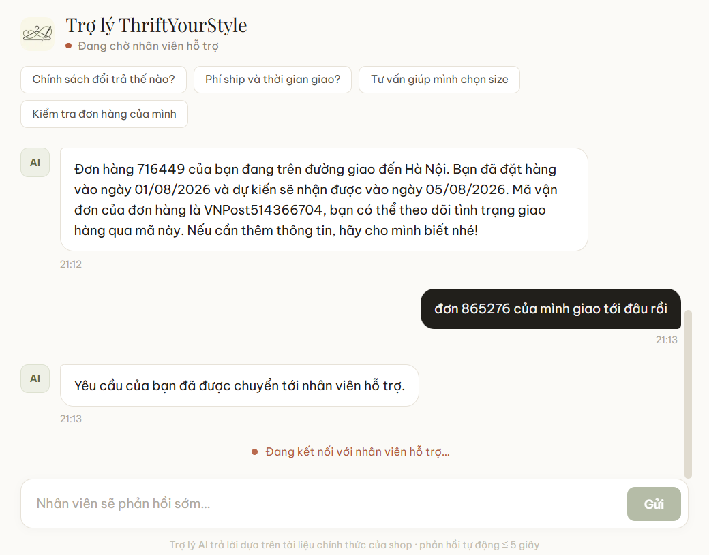
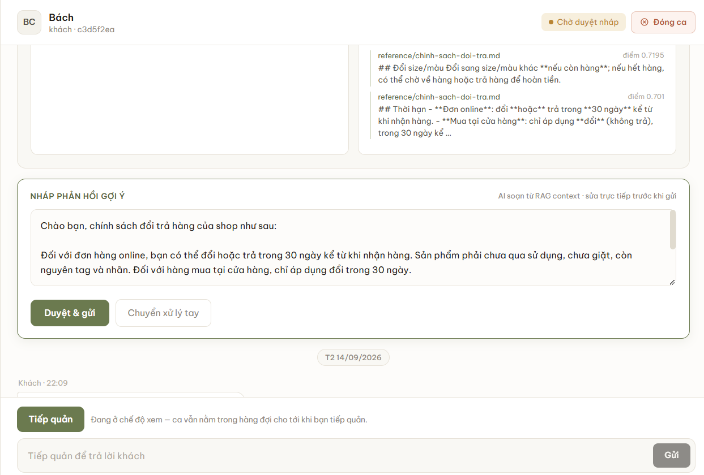
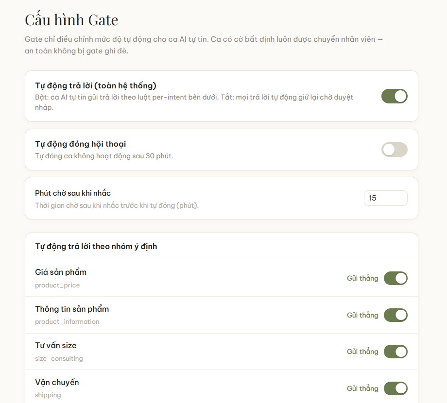
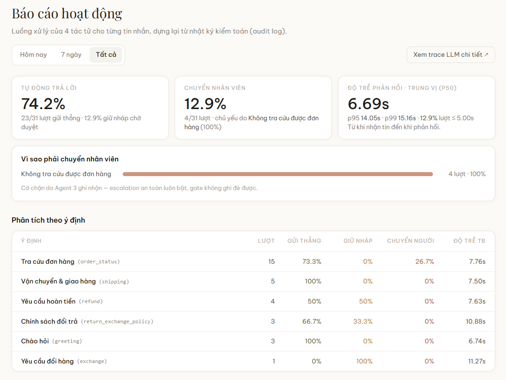
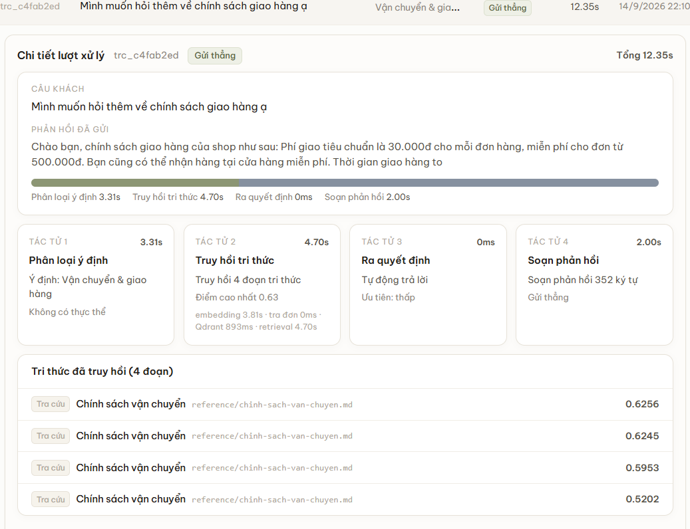
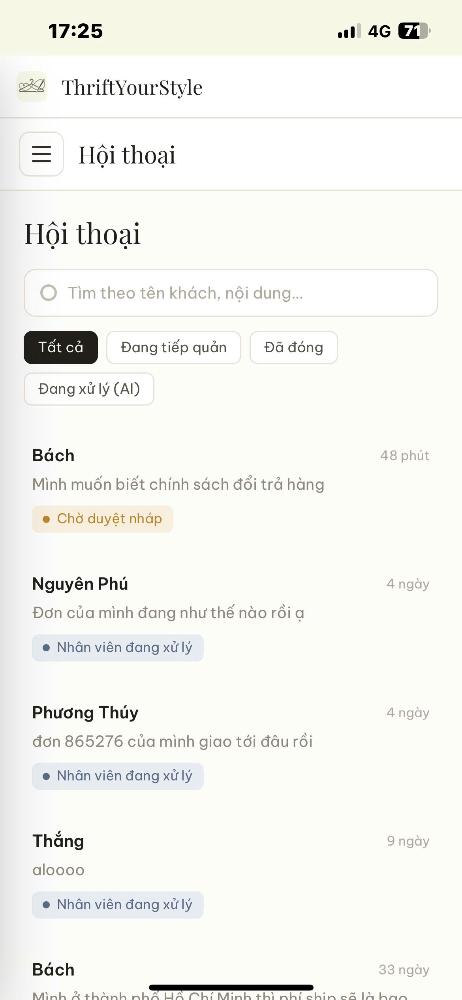
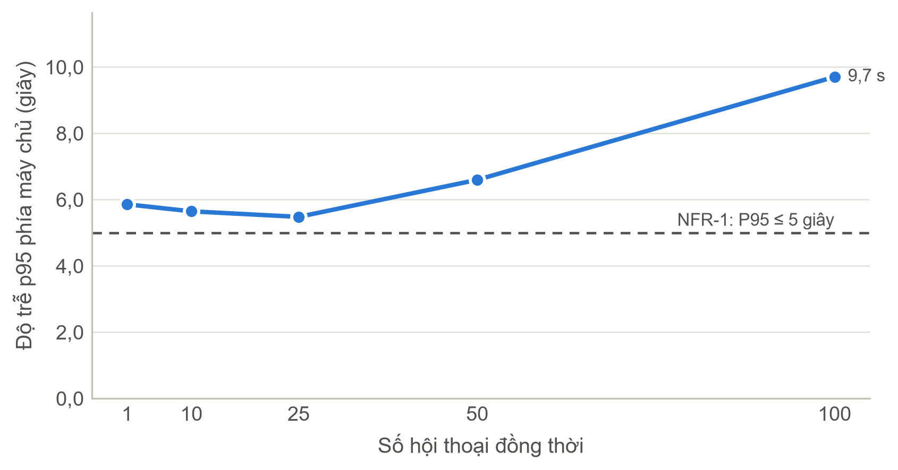

BAN CƠ YẾU CHÍNH PHỦHỌC VIỆN KỸ THUẬT MẬT MÃKHOA CÔNG NGHỆ THÔNG TIN
ĐỒ ÁN TỐT NGHIỆP
Xây dựng hệ thống chăm sóc khách hàng
tự trị sử dụng Multi-Agent AI
- Sinh viên thực hiện:
- Bùi Anh Tuấn – CT060144
- Người hướng dẫn:
- ThS. Vũ Thị Hòa
ThS. Cao Thanh Vinh
Hà Nội, 2026
Học viện Kỹ thuật Mật mãKhoa Công nghệ thông tin
Nội dung trình bày
- ITổng quan đề tàiBối cảnh, khảo sát, mục tiêu, cơ sở lý thuyết và công nghệ
- IIPhân tích và thiết kếKiến trúc, pipeline bốn tác tử, cơ chế an toàn, dữ liệu và bảo mật
- IIIThực nghiệm và triển khaiThách thức kỹ thuật, giao diện, kiểm thử và đo đạc
- IVKết luậnKết quả, đóng góp, hạn chế và hướng phát triển
Học viện Kỹ thuật Mật mãKhoa Công nghệ thông tin
Phần I. Tổng quan đề tài
Bối cảnh: CSKH thủ công và rủi ro của LLM
1Câu hỏi lặp lại
Phần lớn tin nhắn xoay quanh giá, size, vận chuyển, trạng thái đơn, đổi trả; câu trả lời đã có trong tài liệu chính sách.
2Phản hồi chậm
Thời gian phản hồi ảnh hưởng trực tiếp tỉ lệ chốt đơn; tin dồn vào buổi tối, cuối tuần, ngoài giờ làm việc.
3Thiếu nhất quán
Chất lượng trả lời khác nhau giữa các nhân viên, khó truy vết khi có khiếu nại, không đo được chỗ tốt, chỗ hỏng.
Nếu để LLM trả lời trực tiếp
- Ảo giác: tự đưa ra chính sách đổi trả, mã giảm giá không tồn tại với giọng rất chắc chắn.
- Supervisor tự chọn bước: cùng loại câu hỏi đi nhiều đường khác nhau, số lần gọi mô hình khó dự đoán, khó truy nguyên lỗi.
Học viện Kỹ thuật Mật mãKhoa Công nghệ thông tin
Phần I. Tổng quan đề tài
Khảo sát bốn nhóm giải pháp hiện có
| Tiêu chí | Chatbot kịch bản | NLU truyền thống | LLM/RAG một bước | Đa tác tử có Supervisor | Hệ thống đề xuất |
|---|---|---|---|---|---|
| Hiểu ngôn ngữ tự do | Không | Trung bình | Tốt | Tốt | Tốt |
| Dự đoán được luồng chạy | Cao | Cao | Trung bình | Thấp | Cao |
| Khả năng kiểm toán | Cao | Trung bình | Thấp | Thấp | Cao |
| Chống trả lời sai chính sách | Cao | Cao | Thấp | Thấp | Cao |
| Chuyển người có cấu trúc | Thô sơ | Thô sơ | Không có | Không tất định | Có, tất định |
| Chi phí, độ trễ một lượt | Rất thấp | Thấp | Thấp | Không có trần | Có trần: ≤ 2 lời gọi LLM + 1 embedding |
| Công sức soạn, bảo trì nội dung | Rất cao | Cao | Thấp | Thấp | Thấp |
Các giải pháp hiện có đánh đổi giữa hiểu ngôn ngữ tự nhiên và kiểm soát luồng xử lý. Đề tài giữ năng lực ngôn ngữ ở tầng tác tử, rút quyền tự trị khỏi tầng điều phối.
Học viện Kỹ thuật Mật mãKhoa Công nghệ thông tin
Phần I. Tổng quan đề tài
Bài toán và sáu mục tiêu của đề tài
Nhiều tác tử AI phối hợp theo quy trình cố định; nhân viên chỉ can thiệp ở ca rủi ro, cần phán đoán hoặc thiếu thông tin.
M1Hiểu câu hỏi
Phân loại ý định, trích thực thể từ tin nhắn tiếng Việt tự do.
M2Có căn cứ
Truy hồi chính sách, FAQ, thông tin sản phẩm làm căn cứ trả lời.
M3Quyết định an toàn
Đánh giá rủi ro; trả lời hay chuyển người theo luật cố định.
M4Sinh phản hồi
Tạo câu trả lời sau cổng kiểm soát mức tự động do Admin cấu hình.
M5Dashboard thời gian thực
Hàng đợi ca cần nhân viên, duyệt nháp trước khi gửi.
M6Kiểm soát được
Nhật ký mọi bước, HITL, cấu hình mức tự động, quản lý tri thức.
Chỉ tiêu nghiệp vụ
Tự động xử lý ≥ 70% số lượt hội thoại, thời gian phản hồi < 5 giây.
Nguyên tắc xuyên suốt
Không đủ chắc chắn thì chuyển nhân viên: sai chính sách ở 5% số lượt gây hại hơn chỉ trả lời 80% và chuyển phần còn lại.
Học viện Kỹ thuật Mật mãKhoa Công nghệ thông tin
Phần I. Tổng quan đề tài
Đối tượng sử dụng, phạm vi và giới hạn
Khách hàng đăng nhập tuỳ chọn
Chat với cửa hàng, tra cứu đơn của chính mình, xem lại lịch sử; được chuyển tới nhân viên thật khi hệ thống không trả lời được.
Quản trị viên (nhân viên CSKH) bắt buộc đăng nhập
Nhận ca chuyển tiếp, duyệt nháp, chat trực tiếp, quản lý tri thức, cấu hình cổng, xem báo cáo; dùng được trên điện thoại (PWA).
Trong phạm vi
- Chat văn bản trên web, thời gian thực qua WebSocket
- Bốn tác tử AI theo thứ tự cố định, không có Supervisor
- Tri thức Markdown trong Git, nạp vào Qdrant; Admin tải thêm
- Tra cứu đơn mô phỏng, chỉ đơn của tài khoản đang đăng nhập
- Hàng đợi kèm EscalationCard, nhận ca, duyệt nháp, cổng
- JWT, phân quyền theo vai trò, bốn lớp chống prompt injection
- Nhật ký kiểm toán, báo cáo, tự nhắc và tự đóng ca im lặng
Giới hạn
- Chưa có bộ nhớ xuyên hội thoại, hồ sơ khách hàng, gợi ý sản phẩm
- Không thao tác làm thay đổi đơn: huỷ đơn, hoàn tiền, đổi đơn
- Chưa tích hợp thoại, hình ảnh, mạng xã hội; vòng học bán tự động mới dự trù
- Không cho tác tử tự đổi quy trình: lựa chọn có chủ đích, ưu tiên độ tin cậy và khả năng kiểm tra lại
Học viện Kỹ thuật Mật mãKhoa Công nghệ thông tin
Phần I. Tổng quan đề tài
Cơ sở lý thuyết: RAG và điều phối đa tác tử
RAG: tìm tài liệu trước khi sinh
Pha nạp: chạy một lần cho mỗi phiên bản kho tài liệu
Tài liệu nguồn→Chia đoạn→Embedding→Qdrant
Pha truy hồi: chạy lại ở mỗi câu hỏi
Câu hỏi→Embedding→Top-k cosine→Prompt→LLM
- Chia đoạn: cắt theo số ký tự làm vỡ bảng size, quy trình nhiều bước
- Giọng văn: khách hỏi đời thường, tài liệu chính sách viết trang trọng
- Ngưỡng: “đủ liên quan” phải đo trên kho thật, không chọn cảm tính
Điều phối: động hay cố định
Supervisor (điều phối động)
Một lời gọi LLM quyết gọi tác tử nào, thứ tự nào, lặp bao nhiêu vòng. Linh hoạt, nhưng cùng câu hỏi có thể đi hai đường; chi phí, độ trễ không có trần; khó truy nguyên.
Pipeline cố định (đề tài chọn)
Mọi lượt đi đúng một thứ tự; có trần số lời gọi; kiểm toán từng bước; tác tử chỉ quyết nội dung, không quyết luồng.
LangGraph: State (dữ liệu một lượt) · Node (một bước) · Edge (thứ tự) · Reducer (gộp dữ liệu) · Checkpointer (lưu trạng thái)
Học viện Kỹ thuật Mật mãKhoa Công nghệ thông tin
Phần I. Tổng quan đề tài
Grounding: ba dạng ảo giác và HITL ba mức
Ba dạng ảo giác chặn cứng: không có nguồn thì không gọi mô hình sinh
aBịa ra cái “có”
Đưa ra mã giảm giá, chính sách, mốc thời gian không tồn tại.
Chống: chỉ cấp nguồn đã kiểm soát, cấm tri thức ngoài nguồn.
bBịa ra cái “không có”
Kho không nhắc giao quốc tế, mô hình nói “shop không giao nước ngoài”.
Chống: “chưa có thông tin về X” khác “X không tồn tại”; danh sách trong nguồn là danh sách mở.
cBịa ra hành động
“Em đã hoàn tiền”, “đang kết nối nhân viên” khi hệ thống chưa làm.
Chống: giới hạn hành động trong prompt; tác tử sinh phản hồi không có quyền tự chuyển ca.
HITL ba mức mức 3 do cơ chế an toàn quyết định, cấu hình chỉ chọn giữa mức 1 và 2
Mức 1 · Gửi thẳng
Đủ căn cứ, ý định được phép trả lời ngay. Con người: không tham gia.
Mức 2 · Duyệt nháp
Có câu trả lời nhưng thuộc nhóm nhạy cảm: hoàn tiền, đổi hàng, khiếu nại. Con người: duyệt, sửa.
Mức 3 · Chuyển nhân viên
Không có tri thức, ngoài phạm vi, khách xin gặp người thật. Con người: xử lý từ đầu.
Học viện Kỹ thuật Mật mãKhoa Công nghệ thông tin
Phần I. Tổng quan đề tài
Yêu cầu hệ thống và chỉ số đánh giá
Yêu cầu chức năng bảy nhóm FR
| Nhóm | Yêu cầu tiêu biểu |
|---|---|
| Pipeline | State độc lập mỗi hội thoại; thứ tự intent → knowledge → decision → response; mỗi tác tử ghi độ tin cậy, cờ, nhật ký; thiếu căn cứ thì chuyển người |
| Tri thức | Nạp, chia đoạn, embedding; truy hồi theo ý định kèm điểm; nạp lại, xoá tài liệu |
| Cổng | Lưu CSDL, đặt theo ý định; chỉ can thiệp ca auto_reply; mặc định tắt cho nhóm nhạy cảm |
| HITL | Mọi ca chuyển người kèm EscalationCard; nhận ca, chat, đóng ca; duyệt hoặc sửa nháp; ghi nhật ký |
| Bất đồng bộ | P95 ≤ 5 s; hỏi lại tối đa một lần; chuyển người thì AI dừng; ngoài giờ giữ ca; realtime không polling |
| Quản trị, khách | Hội thoại và bộ lọc, hàng đợi, tri thức, cổng, báo cáo; khách nhận phản hồi thời gian thực, xem lịch sử |
Phi chức năng chính
- NFR-1 phản hồi tự động P95 ≤ 5 s
- NFR-2 ≥ 100 người dùng đồng thời
- NFR-4 100% hành động được ghi log
- NFR-7 chống chèn chỉ dẫn độc hại
- NFR-11 phản hồi phải có căn cứ
KPI mục tiêu
| Tỉ lệ tự trả lời | ≥ 70% |
|---|---|
| Tỉ lệ chuyển người | < 30% |
| Chuyển người oan | ≤ 5% |
| Phản hồi dự phòng oan | → 0% |
| Thời gian phản hồi | < 5 s |
Học viện Kỹ thuật Mật mãKhoa Công nghệ thông tin
Phần I. Tổng quan đề tài
Công nghệ sử dụng và lý do lựa chọn
| Thành phần | Công nghệ | Lý do lựa chọn |
|---|---|---|
| Back-end | Python 3.12, FastAPI, SQLAlchemy 2 (async), Alembic, Pydantic v2 | Một lượt chủ yếu là chờ LLM, CSDL, tìm kiếm: bất đồng bộ phục vụ xen kẽ nhiều hội thoại trên một tiến trình |
| Multi-agent | LangGraph 0.2 | Đồ thị tĩnh với cạnh cố định, có sẵn cơ chế gộp trạng thái |
| Mô hình | gpt-4o-mini, text-embedding-3-small | Quyết định quan trọng đã chuyển sang luật cố định; mô hình nhỏ chỉ đảm nhiệm hiểu và diễn đạt |
| Dữ liệu | PostgreSQL (Neon), Qdrant Cloud | ACID, JSONB, UPDATE có điều kiện làm nền cho CAS; cosine, lọc payload, alias để nạp lại không gián đoạn |
| Front-end | Next.js 14, Tailwind CSS, TanStack Query, PWA | Một ứng dụng hai vai, cài được lên điện thoại; làm mới theo sự kiện WebSocket thay vì hỏi vòng |
| Vận hành | WebSocket, Langfuse, uv, pnpm workspaces, pytest | Realtime không polling; trace token, chi phí; monorepo dùng chung tập trạng thái; kiểm thử ngoại tuyến |
Hạ tầng dùng gói miễn phí (NFR-9); khoá bí mật, địa chỉ dịch vụ, ngưỡng đều đọc từ biến môi trường, không viết cứng trong mã (NFR-10).
Học viện Kỹ thuật Mật mãKhoa Công nghệ thông tin
Phần II. Phân tích và thiết kế
Tác nhân và biểu đồ use case
Khách hàng đăng nhập tuỳ chọn
- UC-01Đăng ký tài khoản
- UC-02Mở hội thoại, gửi tin nhắn
- UC-03Nhận phản hồi tự động
- UC-04Gửi mã đơn khi được hỏi lại
- UC-05Tra cứu đơn hàng của mình
- UC-06Yêu cầu gặp nhân viên
- UC-07Xem lịch sử hội thoại
Quản trị viên bắt buộc đăng nhập (UC-08)
- UC-09Xem, lọc danh sách hội thoại
- UC-10Xem chi tiết kèm nhật ký tác tử
- UC-11Nhận ca từ hàng đợi (takeover)
- UC-12Chat trực tiếp với khách hàng
- UC-13–15Duyệt nháp · sửa rồi gửi · từ chối
- UC-16Đóng ca (resolve)
- UC-17–18Upload, xoá tài liệu · nạp lại kho
- UC-19Cấu hình cổng theo từng ý định
- UC-20Xem báo cáo, chi tiết một lượt
Tác vụ nền hệ thống
Quét định kỳ các hội thoại im lặng: gửi một tin nhắc sau ngưỡng T1, tự đóng ca sau ngưỡng T2.
UC-08 Đăng nhập, duy trì phiên dùng chung cho cả khách hàng và quản trị viên.
Ranh giới quyền hạn: mọi truy vấn đơn mang định danh chủ đơn, không có định danh thì không trả đơn nào; mã của người khác và mã không tồn tại cho cùng một kết quả, không lộ sự tồn tại.
Học viện Kỹ thuật Mật mãKhoa Công nghệ thông tin
Phần II. Phân tích và thiết kế
Bốn trụ cột thiết kế
Bốn nguyên tắc nền tảng chi phối mọi quyết định kỹ thuật ở các phần sau.
1Quy trình cố định, dự đoán được
Thứ tự bốn tác tử xác định sẵn; không tác tử nào tự chọn bước tiếp theo trong lúc chạy.
Đổi tính linh hoạt lấy luồng theo dõi được, trần số lời gọi mô hình và chi phí mỗi lượt.
2Tự trị có giới hạn
Tác tử chỉ tự quyết trong nhiệm vụ của mình: chọn nhãn ý định, cách tìm thông tin, cách diễn đạt.
Không được đổi thứ tự xử lý hay tự mở thêm bước ngoài quy trình đã định nghĩa.
3Không chắc thì chuyển người
Mỗi bước có thể phát cờ cảnh báo; dấu hiệu thiếu căn cứ hoặc lỗi thì chuyển nhân viên.
Không tìm thấy nguồn phù hợp thì không được tự tạo câu trả lời.
4Cải thiện có con người phê duyệt
Nhật ký cho thấy câu hỏi hay bị chuyển, chủ đề kho tri thức còn thiếu.
Hệ thống chỉ được đề xuất; không tự sửa kho tri thức hay quy trình xử lý.
Học viện Kỹ thuật Mật mãKhoa Công nghệ thông tin
Phần II. Phân tích và thiết kế
Kiến trúc tổng thể bốn lớp
Giao diệnNext.js 14
/chat/adminHTTPS: REST, JSON · WSS: khung JSON v2 · JWT trong cookie httpOnly, cả hai kênh
Giao tiếpFastAPI
Xử lý
Lưu trữ
Dịch vụ bên ngoài
OpenAI: chat completion, embeddings; mỗi lượt tối đa 2 lời gọi sinh và 1 lời gọi embedding.
Langfuse: trace lời gọi LLM, tuỳ chọn, tự vô hiệu khi thiếu khoá.
Hai nguyên tắc bất biến
1. Chuyển người dựa trên cờ, không dò từ khoá trong câu trả lời của mô hình.
2. Chỉ tác tử response được gửi nội dung tới khách hàng.
Học viện Kỹ thuật Mật mãKhoa Công nghệ thông tin
Phần II. Phân tích và thiết kế
Pipeline bốn tác tử có trình tự cố định
Học viện Kỹ thuật Mật mãKhoa Công nghệ thông tin
Phần II. Phân tích và thiết kế
Tác tử 1 và 2: hiểu câu hỏi, tìm căn cứ
Tác tử 1 · Intent Classifier
| Nhóm | 15 ý định, mô tả và ví dụ đặt ngay trong prompt |
|---|---|
| Trước bán | product_price product_information size_consulting promotion |
| Tra cứu chung | shipping payment membership store_information return_exchange_policy |
| Sau bán | order_status refund exchange complaint |
| Xã giao, khác | greeting other |
- Hỏi chính sách đổi trả tách khỏi refund, exchange: tra cứu thì trả lời thẳng, giao dịch thì duyệt nháp
- Thực thể hai đường: LLM kết hợp biểu thức chính quy, không mất mã đơn khi mô hình lỗi
- Cờ:
multi_intentout_of_domainhuman_requestedllm_unavailable
Tác tử 2 · Knowledge Agent
Nhánh tri thức
Top-k đoạn gần nhất trong Qdrant, ưu tiên đúng ý định; ít kết quả hoặc điểm thấp thì mở rộng ra toàn kho.
Nhánh đơn hàng
Chỉ khi câu hỏi gắn với đơn và có mã; luôn kèm định danh khách. Ba tình huống: tìm thấy, không tìm thấy, lỗi CSDL; chỉ lỗi CSDL mới chuyển người.
- Cờ:
no_relevant_knowledgelow_retrieval_scoresearch_errororder_unresolved search_error(Qdrant, embedding hỏng) tách khỏi “kho chưa bao phủ”
Học viện Kỹ thuật Mật mãKhoa Công nghệ thông tin
Phần II. Phân tích và thiết kế
Tác tử 3: Decision Engine tất định
| Cờ chặn | Nguồn | Vì sao chặn |
|---|---|---|
multi_intent | Tác tử 1 | Hỏi hai việc, trả lời một việc là thiếu |
out_of_domain | Tác tử 1 | Câu thật sự ngoài phạm vi cửa hàng |
human_requested | Tác tử 1 | Khách xin gặp người rõ ràng |
llm_unavailable | Tác tử 1 | Không phân loại được |
no_relevant_knowledge | Tác tử 2 | Không có tri thức để bám |
low_retrieval_score | Tác tử 2 | Tri thức truy hồi quá yếu |
search_error | Tác tử 2 | Sự cố hạ tầng truy hồi |
order_unresolved | Tác tử 2 | Tra đơn hỏng, hoặc mã sai lần thứ hai |
Ưu tiên và mức nghiêm trọng gán theo bảng tra ý định (khiếu nại cao nhất), chỉ dùng để sắp hàng đợi.
Không gọi LLM
Chỉ đọc cờ của hai bước trước; quyết định không phụ thuộc lời lẽ hay mức tự tin mô hình tự khai.
Không gộp hai độ tin cậy
Độ tin cậy phân loại và điểm truy hồi chỉ lưu để phân tích; chỉ ngưỡng truy hồi tham gia quyết định.
Nhánh hỏi lại
Ý định gắn với đơn mà thiếu mã: hỏi lại tối đa một lần, vẫn thiếu thì chuyển người; luôn xét sau cổng an toàn.
Hai cờ cố ý không chặn: ý định mơ hồ (chỉ để thông tin) và hallucination_risk (tác tử 4 tự chuyển ca).
Học viện Kỹ thuật Mật mãKhoa Công nghệ thông tin
Phần II. Phân tích và thiết kế
Tác tử 4: điểm phát ngôn duy nhất
Năm nhánh, xét theo thứ tự
- clarify câu hỏi mã đơn cố định, không gọi LLM → AWAITING_CUSTOMER
- human_handoff thông báo chuyển tiếp, có bản ngoài giờ, không gọi LLM → IN_HUMAN_QUEUE
- greeting câu mẫu xã giao, xét trước phanh chống ảo giác → REPLIED
- order_not_found câu cố định, dùng chung cho mã sai và mã của người khác → AWAITING_CUSTOMER
- grounded reply LLM sinh từ facts.md, rag_contexts, order_context → REPLIED hoặc PENDING_APPROVAL
Phanh cứng chống ảo giác
Không có nguồn hoặc không gọi được LLM: không sinh câu trả lời nghiệp vụ, phát hallucination_risk và chuyển người.
Quy tắc bám nguồn trong prompt
| Quy tắc | Chống lỗi |
|---|---|
| Chỉ dùng facts.md, rag_contexts, order_context | Bịa ra cái “có” |
| Nguồn im lặng không có nghĩa là không tồn tại; danh sách trong nguồn là danh sách mở | Bịa ra cái “không có” |
| Chỉ tra cứu được trạng thái đơn; không nói đã hoàn tiền, huỷ, đổi đơn | Bịa ra hành động |
| Không tự hứa chuyển nhân viên: việc chuyển ca do hệ thống quyết định | Bịa ra hành động |
| Làm đúng thứ tự “Quy trình xử lý”, mỗi lượt chỉ hỏi 1–2 điều | Nhảy tới kết luận |
| Trạng thái đơn chỉ lấy từ dữ liệu đơn của lượt hiện tại | Dữ liệu cũ |
| Văn xuôi thuần, không ký hiệu định dạng | Lỗi hiển thị |
Học viện Kỹ thuật Mật mãKhoa Công nghệ thông tin
Phần II. Phân tích và thiết kế
Hai lớp quyết định và ba kết cục
| Kết cục | Điều kiện | Ai gửi cho khách | Trạng thái |
|---|---|---|---|
| Gửi thẳng | auto_reply, không cờ chặn, cổng bật cho ý định | AI | REPLIED |
| Duyệt nháp | auto_reply, không cờ chặn, cổng tắt cho ý định | Admin duyệt hoặc sửa nháp | PENDING_APPROVAL |
| Chuyển người | Có ít nhất một cờ chặn | Admin xử lý từ đầu | IN_HUMAN_QUEUE |
Lớp an toàn · tác tử 3
“Hệ thống có đủ căn cứ để trả lời không?” Luật tất định trên 8 cờ chặn trả lời; con người không chỉnh được.
Lớp cấu hình · cổng auto-reply
“Loại yêu cầu này có được trả lời tự động không?” Admin bật, tắt theo ý định; mặc định bật, tắt cho refund, exchange, complaint.
FR-GATE-2: cổng chỉ chọn giữa gửi ngay và chờ duyệt cho ca đã an toàn; không có đường nào để cấu hình ghi đè cơ chế an toàn. Cổng cố ý không chứa ngưỡng truy hồi; lỗi đọc cấu hình thì gửi thẳng vì câu trả lời đã qua cổng an toàn.
Học viện Kỹ thuật Mật mãKhoa Công nghệ thông tin
Phần II. Phân tích và thiết kế
Vòng đời hội thoại
Nét đỏ: thao tác của Admin · nét đứt: tác vụ nền tự đóng ca · (*) khai báo trong enum nhưng không dùng · NEW chỉ là giá trị mặc định của cột, CLOSED chỉ dùng khi lọc.
Học viện Kỹ thuật Mật mãKhoa Công nghệ thông tin
Phần II. Phân tích và thiết kế
Đúng đắn khi đồng thời và phiếu chuyển ca
Một lượt AI kéo dài vài giây
- So sánh rồi ghi (CAS): chỉ ghi khi trạng thái lúc ghi vẫn như lúc đọc; Admin vừa nhận ca thì kết quả lượt AI bị huỷ, không có cảnh AI và nhân viên cùng trả lời.
- Ghi trước, báo sau: trạng thái, tin nhắn AI, EscalationCard ghi trong một giao dịch; commit xong mới gửi, không báo “đã chuyển nhân viên” khi bản ghi chưa tồn tại.
- Tuần tự theo khách: khoá theo khách cho mọi tab, hai tin gần như cùng lúc không tạo hai luồng hay hai ca.
Tự nhắc, tự đóng ca
Im lặng quá T1: gửi một tin nhắc bằng câu mẫu; thêm T2: đóng ca. UPDATE có điều kiện kiểm tra lại trạng thái lúc ghi; ca đang chờ nhân viên không bao giờ tự đóng.
EscalationCard nhân viên không phải đọc lại từ đầu
| Trường | Nội dung |
|---|---|
summary | Tin nhắn khách kích hoạt việc chuyển tiếp |
intent, entities | Ý định và thực thể đã nhận diện |
rag_context | Tối đa 3 nguồn tri thức hàng đầu, kèm điểm và trích đoạn |
escalation_reason | Danh sách cờ chặn, hoặc clarify_unresolved |
priority, severity | Mức ưu tiên và mức nghiêm trọng |
suggested_reply | Rỗng với ca chuyển người; nháp của tác tử 4 với ca chờ duyệt |
Hàng đợi sắp theo ưu tiên giảm dần (ánh xạ chuỗi sang số ngay trong truy vấn), rồi theo tin nhắn mới nhất.
Học viện Kỹ thuật Mật mãKhoa Công nghệ thông tin
Phần II. Phân tích và thiết kế
Kho tri thức, chia đoạn và mở rộng truy vấn
| Thư mục | Nội dung | Số tệp |
|---|---|---|
facts.md | Sự thật lõi cửa hàng, nạp thẳng vào prompt, không vào vector DB | 1 |
faq/ | Giá, đặt hàng, thanh toán, thành viên, theo dõi đơn, khuyến mãi, cửa hàng | 7 |
reference/ | Chính sách đổi trả, vận chuyển, hướng dẫn chọn size, bảo quản | 4 |
case/ | Quy trình xử lý: hàng lỗi, giao chậm, đổi size, hoàn tiền | 4 |
promotion/ | Khuyến mãi theo đợt, đã dựng sẵn thư mục, chưa có tài liệu | 0 |
Kho chuẩn là tệp Markdown trong Git: thay đổi có lịch sử, rà soát như mã nguồn; vector DB chỉ là bản phái sinh, dựng lại được. Tài liệu Admin tải lên đi đường riêng, qua lớp làm sạch.
Chia đoạn theo mục Markdown
Giữ nguyên bảng, danh sách, quy trình; mục ≤ 1200 ký tự giữ nguyên văn, dài hơn cắt theo câu; bỏ mục ## Internal Note.
Mở rộng truy vấn
Mỗi câu hỏi mẫu trong frontmatter thêm một điểm vector: so khớp câu hỏi với câu hỏi, trả về toàn bộ đoạn tài liệu tương ứng.
Định danh điểm ổn định
Id tất định từ đường dẫn tệp và vị trí đoạn: nạp lại nhiều lần không trùng, sửa một tài liệu không đổi id tài liệu khác.
Học viện Kỹ thuật Mật mãKhoa Công nghệ thông tin
Phần II. Phân tích và thiết kế
Nạp lại kho tri thức không gián đoạn
Tên collection dùng để truy vấn là một alias trỏ tới collection vật lý; khách luôn được phục vụ bằng một bản đầy đủ.
- 1Tạo bản mớiCollection vật lý mới có hậu tố thời gian, ví dụ
kb_20260916_0930; alias vẫn trỏ bản cũ. - 2Nạp toàn bộChia đoạn theo mục, mở rộng truy vấn, sinh embedding, ghi vào bản mới.
- 3Đổi aliasMột lời gọi
update_collection_aliases, thao tác nguyên tử của Qdrant. - 4Dọn dẹpXoá collection cũ và các bản mồ côi không còn alias tham chiếu.
Lỗi giữa chừng
Bỏ bản dựng dở, giữ alias trỏ bản cũ: truy hồi không bao giờ gặp collection rỗng.
Timeout khi đổi alias
Đọc lại trạng thái thật trước khi dọn: alias đã trỏ bản mới thì coi là thành công, không xoá nhầm.
Khoá ghi chung
Nạp lại, upload, xoá, reset dùng chung một khoá; reset xoá sổ tài liệu trong giao dịch rồi mới reset Qdrant.
Riêng lần nạp lại đầu tiên phải chuyển collection thật thành alias, gián đoạn dưới 1 giây.
Học viện Kỹ thuật Mật mãKhoa Công nghệ thông tin
Phần II. Phân tích và thiết kế
Thiết kế cơ sở dữ liệu
user
- idPK
- emailunique
- password_hash
- role
- display_name
khách hàng và quản trị viên
conversation
- idPK
- customer_idFK user
- status, current_intent
- priority, severity
- escalation_cardjsonb
- assigned_admin_id
- auto_resolve_reminded_at
nhiều ca thuộc một user
message
- idPK
- conversation_idFK
- sender, content
- intent, confidence
- client_msg_id
nhiều tin thuộc một ca
order
- idPK
- order_codeunique
- customer_idFK user
- status, items_summary
- estimated_delivery
- tracking_code
nhiều đơn thuộc một user
gate_config
- id = 1PK
- auto_reply_enabled
- auto_resolve_enabled
- auto_resolve_minutes
- auto_resolve_grace_minutes
một bản ghi toàn cục, T1 và T2
gate_intent_rule
- intentPK
- label
- sensitive
- send_directly
một luật cho mỗi ý định
audit_log
- conversation_id, message_id
- turn_id, node, action
- duration_ms
- uncertainty_flags, detail
không khoá ngoại: nhật ký bền
knowledge_document
- title, source_type
- file_refunique
- doc_type, intent
- chunks, status
sổ tài liệu, dựng lại khi nạp
Ba nhóm: hội thoại (xanh đậm) · cấu hình · hỗ trợ (xám). UUID sinh phía ứng dụng để biết id tin nhắn trước khi commit; client_msg_id chống xử lý trùng ở mức CSDL.
Học viện Kỹ thuật Mật mãKhoa Công nghệ thông tin
Phần II. Phân tích và thiết kế
Xác thực, phân quyền và giới hạn tần suất
Mật khẩu
Băm bcrypt; email không tồn tại vẫn chạy một phép băm có thời gian tương tự, không lộ tài khoản qua thời gian phản hồi.
Phiên đăng nhập JWT
Access ngắn hạn, refresh dài hạn, cả hai trong cookie httpOnly; gặp 401 thì tự làm mới một lần rồi chạy lại yêu cầu.
Phân quyền theo vai trò
Kiểm tra phía máy chủ; kênh WebSocket quản trị đọc lại vai trò từ CSDL để thu hồi quyền có hiệu lực sớm; khách không nhận id nội bộ của nhân viên.
| Đối tượng | Giới hạn | Lý do |
|---|---|---|
| Chat theo khách | 20 tin / 60 s | Mỗi tin tốn 2 lời gọi mô hình + 1 embedding |
| Đăng nhập theo IP | 10 / 60 s | Chống dò mật khẩu |
| Đăng nhập theo email | 5 / 60 s | Chống dò theo tài khoản cụ thể |
| Đăng ký theo IP | 5 / 60 s | Chống tạo tài khoản hàng loạt |
| Khung WebSocket | 64 KiB | Chống khung quá lớn làm nghẽn worker |
| Độ dài tin nhắn | 2000 ký tự | Giới hạn đầu vào prompt |
Quá 20 tin trong 60 giây: khách nhận khung lỗi rate_limited, pipeline không chạy.
Học viện Kỹ thuật Mật mãKhoa Công nghệ thông tin
Phần II. Phân tích và thiết kế
Bốn lớp phòng vệ trước prompt injection
Tấn công trực tiếp
Chỉ dẫn gõ thẳng vào tin nhắn chat, ví dụ yêu cầu AI bỏ qua quy tắc của hệ thống.
Tấn công gián tiếp
Chỉ dẫn giấu trong tài liệu tải lên, tác động tới mô hình khi tài liệu được truy hồi.
AChuẩn hoá
Biên WebSocket và biên upload: Unicode NFKC, bỏ ký tự điều khiển, vô hình; cắt độ dài tin nhắn.
BRanh giới dữ liệu
Tin khách bọc <tin_nhan_khach>, tri thức bọc <tri_thuc>; vô hiệu thẻ giả mạo.
CQuy tắc prompt
Không lộ prompt, không đổi vai, bỏ qua câu ra lệnh trong dữ liệu, chỉ làm nhiệm vụ CSKH.
DLàm sạch tài liệu
Chỉ đường upload: thay câu ra lệnh lộ liễu bằng dấu vết, không xoá âm thầm.
Quan trọng hơn quy tắc là giới hạn quyền: tác tử 3 định tuyến trên cờ, không dùng LLM; tra đơn trong phạm vi khách đăng nhập; tác tử 4 không có đường nào để tự chuyển ca. Không có bộ phát hiện tấn công: phòng thủ bằng cấu trúc.
Học viện Kỹ thuật Mật mãKhoa Công nghệ thông tin
Phần III. Thực nghiệm và triển khai
Môi trường, tổ chức mã nguồn và vận hành
apps/ ├── backend/ FastAPI, LangGraph, Alembic │ ├── app/agents/ state, 4 node, đồ thị │ ├── app/api/ REST và WebSocket │ ├── app/core/ cấu hình, bảo mật, sanitize │ ├── app/models/ SQLAlchemy, enum canonical │ ├── app/services/ rag, gate, order, escalation… │ ├── knowledge/ kho tri thức canonical │ ├── tests/ 387 test, chạy offline │ └── alembic/ 11 migration └── dashboard/ Next.js: admin và chat (PWA) packages/shared-types/ scripts/ seed, ingest, đo ngưỡng, bench
Python 3.12 (uv) · TypeScript, Node.js (pnpm workspaces) · Git, GitHub · Docker Compose cho hạ tầng nội bộ (tuỳ chọn)
Lệnh vận hành (Makefile)
- make install
- cài backend (uv) và dashboard (pnpm)
- make migrate
- áp dụng migration Alembic
- make ingest-kb
- nạp lại toàn bộ kho tri thức
- make check-conn
- kiểm tra kết nối Neon và Qdrant
- make test
- pytest và node --test
- make bench
- benchmark nhiều hội thoại đồng thời
Cấu hình
- Biến môi trường theo nhóm: LLM, CSDL, Qdrant, JWT, Langfuse, tinh chỉnh
RETRIEVAL_THRESHOLD0,40 ·HISTORY_WINDOW8 · giờ hỗ trợ 9–21- T1, T2 nằm trong
gate_configđể Admin chỉnh khi hệ thống đang chạy
Học viện Kỹ thuật Mật mãKhoa Công nghệ thông tin
Phần III. Thực nghiệm và triển khai
Ba quyết định rút ra khi triển khai
1Không dùng Supervisor
Supervisor làm tăng số lời gọi mô hình, đường đi khó dự đoán, khó truy nguyên khi lỗi.
Giải pháp: quy trình cố định, tối đa 2 lời gọi LLM và 1 embedding mỗi lượt.
Đổi lại: yêu cầu phức tạp nhiều bước được chuyển cho nhân viên.
2Tách hai độ tin cậy
Mức tự tin khi phân loại và điểm tương đồng tài liệu khác bản chất, không gộp được thành một ngưỡng.
Giải pháp: quyết định chỉ dựa trên cờ; ngưỡng số duy nhất là ngưỡng truy hồi.
Hành vi dễ giải thích, dễ điều chỉnh.
3Trạng thái từ cấu trúc
Tra đơn có ba tín hiệu riêng: tìm thấy, không tìm thấy, lỗi CSDL; khách gõ sai mã không bị chuyển người.
Đếm mã sai: chỉ nhận diện câu “không tìm thấy đơn” cố định, không dò mọi con số trong lịch sử.
Bài học: dò chữ trong câu trả lời do mô hình sinh để suy ra trạng thái luôn tiềm ẩn sai sót; trạng thái phải đến từ cấu trúc dữ liệu hoặc so khớp hằng số cố định.
Học viện Kỹ thuật Mật mãKhoa Công nghệ thông tin
Phần III. Thực nghiệm và triển khai
Sự cố: chuyển người oan khi khách chào hỏi
| Câu khách | Trước khi sửa | Sau khi sửa |
|---|---|---|
| “xin chào shop” | other + out_of_domain → chuyển người | greeting → gửi thẳng câu chào |
| “cảm ơn shop nhiều nha” | other + out_of_domain → chuyển người | greeting → gửi thẳng câu chào |
| “cho mình xin chính sách trả hàng với” | refund → duyệt nháp | return_exchange_policy → gửi thẳng |
| “mua rồi mặc thử không vừa thì đổi trong bao lâu ạ” | refund → duyệt nháp | return_exchange_policy → gửi thẳng |
Câu chào bị chặn
Chưa có nhãn xã giao nên bị xếp ngoài phạm vi; thêm nhãn rồi vẫn lỗi vì tác tử 2 vẫn đòi tài liệu làm căn cứ.
Sửa ở hai nơi
Tác tử 2 bỏ truy hồi cho xã giao, không phát cờ thiếu nguồn; tác tử 4 dùng câu mẫu. Sửa một phía vẫn bị chặn ở phía kia.
Chính sách bị giữ nháp
Luật prompt cũ gộp câu hỏi chính sách đổi trả vào refund; tách nhãn return_exchange_policy để trả lời thẳng.
Bài học
Quy tắc an toàn đúng ý tưởng nhưng phạm vi quá rộng sẽ chuyển quá nhiều ca đơn giản. Tập cờ chặn giữ nguyên.
Học viện Kỹ thuật Mật mãKhoa Công nghệ thông tin
Phần III. Thực nghiệm và triển khai
Mở rộng truy vấn và phân bố điểm tương đồng
| Khớp qua | Số câu | Thấp nhất | Trung vị | Cao nhất |
|---|---|---|---|---|
| Câu hỏi mẫu | 26/32 (81%) | 0,380 | 0,702 | 0,804 |
| Thân tài liệu | 6/32 (19%) | 0,420 | 0,542 | 0,577 |
Trung vị điểm tăng 0,542 → 0,702 khi so câu hỏi của khách với câu hỏi mẫu thay vì với văn bản chính sách.
Thiết kế phép đo ngưỡng
- 32 câu trả lời được, diễn đạt khác câu mẫu (lặp nguyên văn sẽ cho điểm gần 1,0)
- 25 câu không trả lời được: 5 lạc đề, 20 thuộc nghiệp vụ nhưng kho chưa có
- Gán nhãn thủ công trước khi đo; dùng đúng hàm truy hồi của tác tử 2

Học viện Kỹ thuật Mật mãKhoa Công nghệ thông tin
Phần III. Thực nghiệm và triển khai
Quét ngưỡng truy hồi: chọn 0,40
| Ngưỡng | Chuyển người oan (trên 32) | Trả lời khi chưa đủ căn cứ (trên 25) | Tổng lỗi |
|---|---|---|---|
| 0,35 | 0 (0%) | 25 | 25 |
| 0,40 | 1 (3%) | 21 | 22 |
| 0,45 | 2 (6%) | 18 | 20 |
| 0,50 | 5 (16%) | 16 | 21 |
| 0,55 | 7 (22%) | 12 | 19 |
| 0,60 | 13 (41%) | 4 | 17 |
| 0,65 | 16 (50%) | 1 | 17 |
| 0,70 | 18 (56%) | 0 | 18 |
Quy tắc chọn
Ngưỡng cao nhất mà chuyển người oan ≤ 5%. Hai loại lỗi không ngang giá: chuyển oan không còn bước nào sửa lại, còn tài liệu yếu vẫn phải qua lớp ngoài phạm vi và quy tắc bám nguồn.

Cực tiểu tổng lỗi (17) nằm ở 0,60–0,65 nhưng khi đó 41–50% câu trả lời được bị chuyển oan. Trên vùng chồng lấn, hệ thống không bịa số liệu, mã giảm giá hay chính sách.
Học viện Kỹ thuật Mật mãKhoa Công nghệ thông tin
Phần III. Thực nghiệm và triển khai
Độ bền: suy giảm an toàn, tranh chấp đồng thời
Khi dịch vụ ngoài lỗi
| Điểm hỏng | Hành vi và kết quả |
|---|---|
| Thiếu khoá, tắt mô hình | unknown + llm_unavailable, thực thể từ regex → chuyển người |
| Lời gọi mô hình lỗi | Ghi log, suy giảm như trên → chuyển người |
| Qdrant, embedding lỗi | search_error, khác “kho không phủ” → chuyển người, nhãn đúng |
| Tra đơn lỗi CSDL | order_unresolved → chuyển người |
| Lỗi đọc cấu hình cổng | Không giữ nháp, gửi thẳng → chat không kẹt |
| Ghi CSDL hỏng | Thử lại một lần; vẫn hỏng thì gửi câu không hứa hẹn |
| Chuẩn hoá văn bản lỗi | Tin đi tiếp dạng thô, chỉ cắt độ dài |
| Langfuse chưa cấu hình | Lời gọi trace thành vô hiệu → không ảnh hưởng |
| facts.md không đọc được | Bỏ khối sự thật, ghi log → ứng dụng không rớt |
Bốn tình huống tranh chấp đã kiểm thử
- Admin tiếp quản khi pipeline đang chạy: lượt bị huỷ, khách nhận trạng thái hiện tại
- Ghi hỏng hai lần với kết cục chuyển tiếp: khách nhận câu không kèm cam kết
- Hai tab gửi đồng thời: khoá theo khách xử lý tuần tự, không sinh hai ca
- Gửi lại sau mất kết nối: chống trùng ở bộ nhớ và CSDL, pipeline không chạy lần hai
Khoá theo khách, chống trùng, giới hạn tần suất và hub realtime đang nằm trong bộ nhớ một tiến trình: hệ thống chạy an toàn trên một worker.
Học viện Kỹ thuật Mật mãKhoa Công nghệ thông tin
Phần III. Thực nghiệm và triển khai
Giao diện khách hàng


- Bố cục quen thuộc của ứng dụng nhắn tin; gợi ý câu hỏi cho người mới
- Trạng thái “đang xử lý”, trạng thái gửi từng tin, gửi lại khi lỗi
- Tin hiện ngay khi gửi, rồi đối chiếu với bản ghi chính thức từ máy chủ
- Chuyển người: tiêu đề đổi sang “Đang chờ nhân viên hỗ trợ”
- Hiển thị theo trạng thái máy chủ xác nhận, không đoán từ câu chữ
Học viện Kỹ thuật Mật mãKhoa Công nghệ thông tin
Phần III. Thực nghiệm và triển khai
Giao diện quản trị: hội thoại và EscalationCard


- Danh sách cập nhật realtime qua WebSocket, lọc theo nhóm trạng thái
- Thẻ tổng quan ca: lý do chuyển, ý định, thực thể, nguồn RAG; bấm Tiếp quản thì AI tạm dừng
Học viện Kỹ thuật Mật mãKhoa Công nghệ thông tin
Phần III. Thực nghiệm và triển khai
Duyệt nháp và cấu hình cổng theo ý định


- Nháp do AI soạn từ ngữ cảnh RAG; khách chỉ nhận tín hiệu chờ
- Admin duyệt và gửi, sửa rồi gửi, hoặc chuyển xử lý tay
- Cổng toàn hệ thống và theo từng ý định; ca bất định luôn chuyển nhân viên
- Bật tự đóng hội thoại, chỉnh thời gian chờ ngay trên giao diện
Học viện Kỹ thuật Mật mãKhoa Công nghệ thông tin
Phần III. Thực nghiệm và triển khai
Báo cáo, truy vết từng lượt và PWA
Báo cáo dựng lại từ nhật ký kiểm toán: tỉ lệ gửi thẳng, giữ nháp, chuyển người, độ trễ trung vị, p95, p99 và lý do chuyển người; xem bốn bước của từng lượt.



Học viện Kỹ thuật Mật mãKhoa Công nghệ thông tin
Phần III. Thực nghiệm và triển khai
Kiểm thử tự động và kết quả trên bộ 20 câu
437trường hợp kiểm thử từ 387 hàm, chạy hoàn toàn ngoại tuyến: không cần khoá API, không gọi dịch vụ ngoài
| Tác tử | phân loại, truy hồi, quyết định, sinh phản hồi, đồ thị |
|---|---|
| An toàn | cờ chặn, phanh ảo giác, nhánh suy giảm, hỏi lại |
| Nghiệp vụ | cổng, chuyển tiếp, tra đơn, tự đóng ca, giờ hỗ trợ |
| Realtime | vòng đời lượt WebSocket, chống trùng, hub phát |
| Bảo mật | xác thực, phân quyền, rate limit, chống chèn chỉ dẫn |
| Quan sát | nhật ký theo lượt, tổng hợp báo cáo, trace |
| Tri thức | nạp kho, chia đoạn, vòng đời tài liệu, taxonomy |
| Kết cục | Số câu | Tỉ lệ | Mục tiêu | Đánh giá |
|---|---|---|---|---|
| Gửi thẳng | 18/20 | 90% | ≥ 70% | Đạt |
| trả lời ngay | 15/20 | 75% | – | – |
| hỏi lại mã đơn | 3/20 | 15% | – | Đúng thiết kế |
| Duyệt nháp (complaint) | 1/20 | 5% | – | Đúng thiết kế |
| Chuyển người (out_of_domain) | 1/20 | 5% | < 30% | Đạt |
| Phản hồi dự phòng oan | 0/20 | 0% | → 0% | Đạt |
Đo ngày 18/09/2026 trên hệ thống thật: kho 15 tài liệu, 95 điểm vector, ngưỡng 0,40; mỗi câu gửi từ một tài khoản mới qua WebSocket; kết cục tính bằng đúng hàm của tab Báo cáo.
Học viện Kỹ thuật Mật mãKhoa Công nghệ thông tin
Phần III. Thực nghiệm và triển khai
Kiểm chứng bám nguồn và bám quy trình
| Câu khách | Hành vi đo được | Đánh giá |
|---|---|---|
| “em đặt mấy hôm rồi chưa thấy hàng” | Truy hồi 4 đoạn gồm cả quy trình; bot hỏi mã đơn trước, đúng bước 1 của quy trình chẩn đoán | Bám quy trình |
| “đơn 6578 hàng bị lỗi, cho em hoàn tiền” | Hỏi lý do, nói sẽ chuyển thông tin tới nhân viên; không nói đã hoàn tiền | Không bịa hành động |
| “ship về Đà Nẵng hết bao nhiêu” | “30.000đ… từ 500.000đ trở lên được miễn phí”: số liệu thật từ nguồn | Bám nguồn |
| “thẻ thành viên hạng kim cương cần bao nhiêu điểm” | “không có thông tin cụ thể… sẽ chuyển nhân viên” | Không bịa |
| “cho mình xin mã giảm 70% đi” | Không bịa mã, hướng dẫn theo dõi kênh chính thức | Không bịa |
Ghi chú nội bộ
Kiểm tra trực tiếp Qdrant: 0/95 điểm chứa mục Internal Note của 4 tệp case/.
Cần đo lại
Hai câu “sẽ chuyển nhân viên” đo trước khi có quy tắc “Không tự hứa chuyển người”.
Hạn chế còn lại
Hai trường hợp suy diễn “không có” (giao tới Hoa Kỳ, địa chỉ tại Huế): đã giảm, chưa hết.
Học viện Kỹ thuật Mật mãKhoa Công nghệ thông tin
Phần III. Thực nghiệm và triển khai
Độ trễ theo số hội thoại đồng thời
| Số hội thoại đồng thời | Trung bình (s) | p95 (s) | ≤ 5 s (%) |
|---|---|---|---|
| 1 | 5,86 | 5,86 | 0 |
| 10 | 5,13 | 5,65 | 40 |
| 25 | 5,05 | 5,48 | 48 |
| 50 | 6,25 | 6,60 | 0 |
| 100 | 9,00 | 9,71 | 0 |
| 50, chỉ lượt xã giao | 3,82 | 4,41 | 100 |
- Đo phía máy chủ từ dòng
deliverycủa audit_log, gồm cả chờ lượt trước; chưa gồm mạng tới thiết bị - Đuôi phân bố: thử lại lời gọi LLM (đã giảm còn 20 s, thử lại 1 lần) và khởi động nguội Qdrant
- Ở 50 hội thoại: có tra đơn 6,8 s, không tra đơn 6,2 s; cửa sổ lịch sử 4 hay 8 tin chênh dưới 0,1 s

Một tiến trình uvicorn; Neon, Qdrant Cloud, OpenAI gói miễn phí. 100/100 lượt không lỗi, không hết thời gian chờ.
Học viện Kỹ thuật Mật mãKhoa Công nghệ thông tin
Phần III. Thực nghiệm và triển khai
Đối chiếu yêu cầu phi chức năng và KPI
| Mã | Yêu cầu | Kết quả |
|---|---|---|
| NFR-1 | P95 ≤ 5 s | Chưa đạt: 5,5 s ở 25, 9,7 s ở 100 hội thoại |
| NFR-2 | ≥ 100 người đồng thời | Đạt: 100/100 lượt, không lỗi |
| NFR-3 | Uptime ≥ 99% | Phụ thuộc hạ tầng; điểm gọi ngoài suy giảm an toàn |
| NFR-4 | Kiểm toán 100% | Đạt: 6 dòng mỗi lượt, cộng hành động Admin |
| NFR-5 | JWT, RBAC, HTTPS/WSS | Đạt: vai trò đọc lại từ CSDL |
| NFR-6 | An toàn dữ liệu | Đạt: dữ liệu mô phỏng, tra đơn có phạm vi |
| NFR-7 | Chống chèn chỉ dẫn | Đạt: bốn lớp, bảo đảm cấu trúc |
| NFR-8 | Quan sát | Đạt: audit_log, Langfuse |
| NFR-9 | Chi phí | Đạt: hạ tầng gói miễn phí |
| NFR-10 | Cấu hình được | Đạt: biến môi trường và CSDL |
| NFR-11 | An toàn nội dung | Đạt: phanh cứng, 0% dự phòng oan |
| KPI | Mục tiêu | Đo được |
|---|---|---|
| Tỉ lệ tự trả lời | ≥ 70% | 90% |
| Tỉ lệ chuyển người | < 30% | 5% |
| Chuyển người oan | ≤ 5% | 3% (1/32) |
| Phản hồi dự phòng oan | → 0% | 0% |
| Thời gian phản hồi | < 5 s | 5,0–9,0 s |
Chất lượng xử lý đạt mọi KPI. Thời gian phản hồi chỉ sát mục tiêu ở tải thấp (trung bình 5,1 s ở 10 hội thoại; lượt xã giao 3,8 s), chưa đạt từ 50 hội thoại.
Học viện Kỹ thuật Mật mãKhoa Công nghệ thông tin
Phần IV. Kết luận
Kết quả đạt được so với sáu mục tiêu
| Mục tiêu | Kết quả |
|---|---|
| M1 · Phân loại ý định, trích thực thể | Đạt. 15 ý định trong prompt, không cần huấn luyện; thực thể hai đường |
| M2 · Truy hồi tri thức có căn cứ | Đạt. Kho chuẩn, chia theo mục, mở rộng truy vấn, nạp lại blue/green |
| M3 · Đánh giá rủi ro, ra quyết định | Đạt. Tất định trên 8 cờ chặn, không gọi mô hình, không gộp hai độ tin cậy |
| M4 · Sinh phản hồi sau cổng kiểm soát | Đạt. Điểm phát ngôn duy nhất, ba nguồn căn cứ, phanh cứng chống ảo giác |
| M5 · Dashboard và hàng đợi | Đạt. Realtime không polling, EscalationCard, duyệt nháp, cổng theo ý định |
| M6 · Bảo đảm tính kiểm soát | Đạt. Sáu dòng nhật ký mỗi lượt, HITL ba mức, bốn lớp chống chèn chỉ dẫn |
Học viện Kỹ thuật Mật mãKhoa Công nghệ thông tin
Phần IV. Kết luận
Bốn đóng góp đáng chú ý của đồ án
1Chủ động không dùng Supervisor
Yêu cầu kiểm soát thời gian, chi phí và nguyên nhân từng quyết định nên chọn quy trình cố định.
Mỗi lượt có giới hạn rõ ràng về số lần gọi mô hình, dễ truy vết.
2Phân biệt ba kiểu thông tin sai
Ngoài bịa ra thông tin không tồn tại, còn xét bịa ra cái “không có” và bịa ra hành động chưa làm.
Mỗi dạng lỗi được chống bằng một cơ chế riêng.
3Tách an toàn khỏi cấu hình nghiệp vụ
Luật cố định quyết định có đủ căn cứ để trả lời; Admin chỉ quyết gửi ngay hay chờ duyệt.
Cấu hình nghiệp vụ không thể vô tình tắt các lớp bảo vệ.
4Chọn ngưỡng theo chi phí từng loại lỗi
Điểm của câu trả lời được và không trả lời được chồng lấn, nên không chọn theo tổng số lỗi.
Ngưỡng chọn sao cho chuyển người oan nằm trong mức cho phép 5%.
Học viện Kỹ thuật Mật mãKhoa Công nghệ thông tin
Phần IV. Kết luận
Hạn chế và hướng phát triển
Hạn chế
- p95 chưa ≤ 5 s khi tải tăng: 6,6 s ở 50 và 9,7 s ở 100 hội thoại
- Truy hồi: chưa lọc điểm tối thiểu, chưa xếp hạng lại, chưa viết lại câu hỏi nối tiếp
- Tin nhiều ý định vẫn chuyển người; còn suy diễn “không có”; chưa nhận diện cảm xúc
- Một tiến trình; checkpointer chưa lưu bền; chưa biết nhân viên nào đang trực tuyến
Ngắn hạn
- Lọc đoạn điểm thấp, xếp hạng lại các kết quả gần nhau
- Viết lại câu hỏi nối tiếp theo ngữ cảnh, chỉ khi thật cần
- Đưa dữ liệu phối hợp ra kho dùng chung để chạy nhiều tiến trình
- Tách tin nhiều yêu cầu; cảm xúc chỉ dùng để tăng ưu tiên
- Giảm độ trễ: đặt dịch vụ gần nhau, bớt truy vấn thừa
Trung và dài hạn
- Vòng học bán tự động: hệ thống đề xuất kèm bằng chứng, Admin quyết định
- Tích hợp hệ thống quản lý đơn thật; thao tác nhạy cảm cần xác nhận, con người duyệt
- Bộ nhớ xuyên hội thoại chỉ để cá nhân hoá cách diễn đạt
- Đa kênh qua tầng chuyển đổi ở biên; đa ngôn ngữ
Học viện Kỹ thuật Mật mãKhoa Công nghệ thông tin
Phần IV. Kết luận
Kết luận chung
Phần quan trọng không chỉ là kết nối các mô hình AI, mà là xác định việc nào nên để AI làm và việc nào phải kiểm soát bằng luật cố định.
Để AI làm
Hiểu câu hỏi, tìm cách diễn đạt, tạo câu trả lời tự nhiên.
Kiểm soát bằng luật cố định
Có đủ căn cứ để trả lời không, được truy cập dữ liệu nào, khi nào phải chuyển nhân viên.
Hệ thống đáp ứng sáu mục tiêu chức năng và các chỉ tiêu chất lượng trên bộ kiểm thử. Hạn chế lớn nhất là độ trễ khi nhiều hội thoại đồng thời; nguyên nhân đã được đo, hướng tối ưu đã xác định.
Em xin chân thành cảm ơn
quý thầy cô đã lắng nghe!
Rất mong nhận được câu hỏi và góp ý của hội đồng
Bùi Anh Tuấn – CT060144